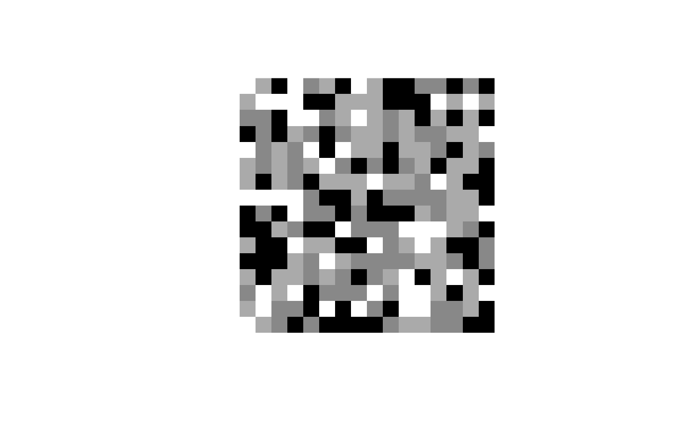

Convert raw data structured conform a Commodore Amiga hardware
sprite (see references) into a hardwareSprite() object.
Usage
# S4 method for raw,missing
rawToHWSprite(x, col)
# S4 method for raw,character
rawToHWSprite(x, col)Arguments
- x
rawdata structured as an Amiga hardware sprite (see references).- col
A
vectorof colours (character) to be used for the hardware sprite. Specify the three visible colours for the sprite. When missing some default colours (grayscale) will be used. The colours have to be provided separately as they are usually not stored together with the hardware sprite data.
Value
Returns a hardwareSprite() object based on the provided raw data
Details
Information to set up a hardware sprite is stored as raw data
on Commodore Amigas. This method can be used to convert this data
into a hardwareSprite() object. This object can in turn
be converted with as.raster() such that it can be plotted in R.
See also
Other raw.operations:
as.AmigaBasic(),
as.raw.AmigaBasic(),
colourToAmigaRaw(),
packBitmap(),
rawToAmigaBasicBMAP(),
rawToAmigaBasicShape(),
rawToAmigaBasic(),
rawToAmigaBitmapFontSet(),
rawToAmigaBitmapFont(),
rawToAmigaIcon(),
rawToIFFChunk(),
rawToSysConfig(),
simpleAmigaIcon()
Other HWSprite.operations:
rasterToHWSprite()
Examples
## Let's generate a 16x16 sprite with a random bitmap:
dat <- as.raw(c(0x00, 0x00, 0x10, 0x00,
sample.int(255, 64, replace = TRUE),
0x00, 0x00, 0x00, 0x00))
## make it a hardware sprite object:
spr <- rawToHWSprite(dat)
## and plot it:
plot(spr, interpolate = FALSE)

## with some imagination when can make
## a more structured image:
dat <- as.raw(c(0x00, 0x00, 0x10, 0x00, 0x00, 0x00, 0xff, 0xf8,
0x7f, 0x80, 0x80, 0x70, 0x7f, 0x00, 0xbe, 0xe0,
0x7e, 0x00, 0x85, 0xc0, 0x7d, 0x80, 0x82, 0x40,
0x6b, 0xc0, 0x95, 0xa0, 0x57, 0xe0, 0xa8, 0xd0,
0x2f, 0xf0, 0xd1, 0x68, 0x4f, 0xf8, 0xb0, 0x34,
0x07, 0xfc, 0xf8, 0x5a, 0x03, 0xfe, 0xe4, 0x0d,
0x01, 0xfc, 0xc2, 0x12, 0x00, 0xf8, 0x81, 0x04,
0x00, 0x70, 0x00, 0x88, 0x00, 0x20, 0x00, 0x50,
0x00, 0x00, 0x00, 0x20, 0x00, 0x00, 0x00, 0x00))
spr <- rawToHWSprite(dat, c("#EE4444", "#000000", "#EEEECC"))
plot(spr, interpolate = FALSE)